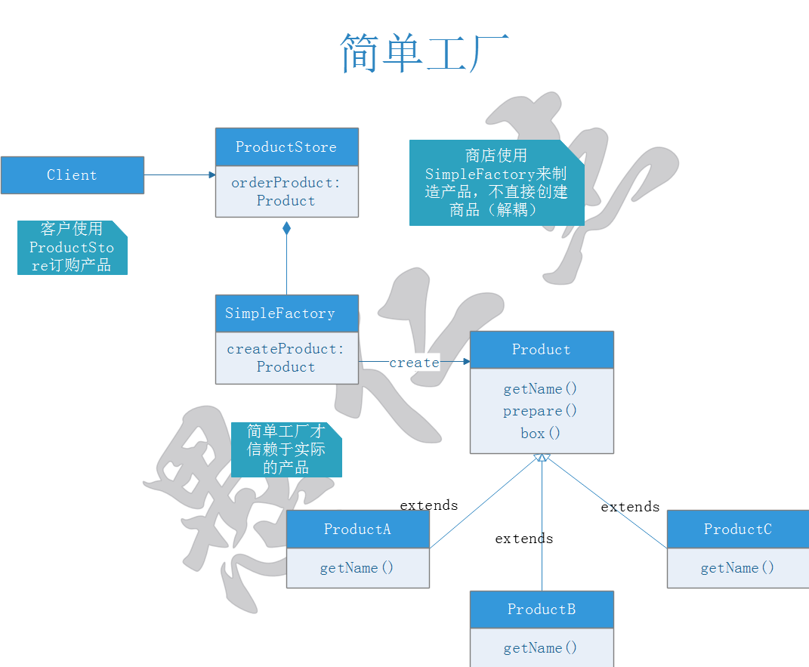
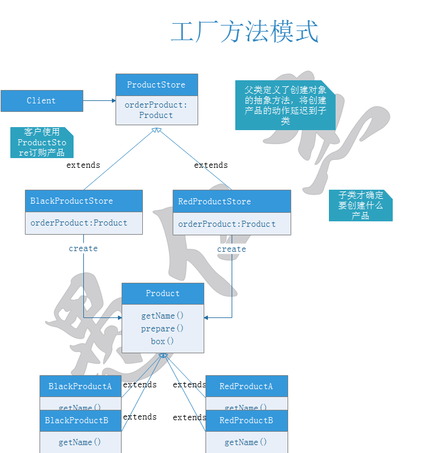
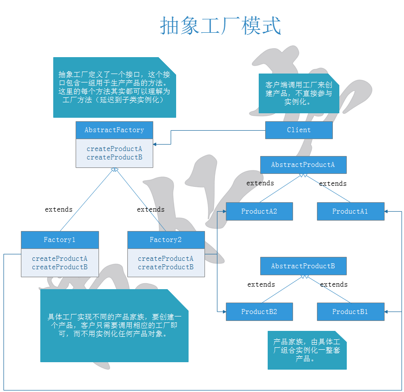

简单工厂其实不是一种设计模式，反而比较像是一种编程习惯，但其经常被误认为是"工厂模式"。

public abstract class Product { public abstract String getName(); public void prepare(){ System.out.println("Preparing " + getName()); } public void box(){ System.out.println("Place product in official product box"); } }public class ProductA extends Product { @Override public String getName() { return "ProductA"; } }public class ProductB extends Product { @Override public String getName() { return "ProductB"; } }public class ProductC extends Product { @Override public String getName() { return "ProductC"; } }
public enum EProductName { A, B, C }public class SimpleFactory { public AbstractProduct createProduct(EProductName name) { if(name == EProductName.A) { return new ProductA(); } else if(name == EProductName.B) { return new ProductB(); } else if(name == EProductName.C) { return new ProductC(); } return null; } }public class ProductStore { SimpleFactory factory; public ProductStore(SimpleFactory factory) { this.factory = factory; } public Product orderProduct(EProductName name) { Product product = factory.createProduct(name); product.prepare(); product.box(); return product; } }
public class Client {
public static void main(String[] args) {
SimpleFactory sf = new SimpleFactory();
ProductStore store = new ProductStore(sf);
store.orderProduct(EProductName.A);
store.orderProduct(EProductName.B);
store.orderProduct(EProductName.C);
/* Output:
Preparing ProductA
Place product in official product box
Preparing ProductB
Place product in official product box
Preparing ProductC
Place product in official product box
*/
}
}工厂方法模式定义了一个创建对象的接口，但由子类决定要实例化的类是哪一个。工厂方法让类把实例化推迟到子类。

public abstract class Product { public abstract String getName(); public void prepare(){ System.out.println("Preparing " + getName()); } public void box(){ System.out.println("Place product in official product box"); } }public class BlackProductA extends Product { @Override public String getName() { return "BlackProductA"; } @Override public void box() { System.out.println("Place product in black box"); } }public class BlackProductB extends Product { @Override public String getName() { return "BlackProductB"; } public void box() { System.out.println("Place product in black box"); } }public class RedProductA extends Product { @Override public String getName() { return "RedProductA"; } public void box() { System.out.println("Place product in red box"); } }public class RedProductB extends Product { @Override public String getName() { return "RedProductB"; } public void box() { System.out.println("Place product in red box"); } }
public enum EProductName { A, B }public abstract class ProductStore { public Product orderProduct(EProductName name) { Product product = createProduct(name); product.prepare(); product.box(); return product; } protected abstract Product createProduct(EProductName name); }public class BlackProductStore extends ProductStore{ @Override protected Product createProduct(EProductName name) { if(name == EProductName.A) { return new BlackProductA(); } else if(name == EProductName.B) { return new BlackProductB(); } return null; } }public class RedProductStore extends ProductStore{ @Override protected Product createProduct(EProductName name) { if(name == EProductName.A) { return new RedProductA(); } else if(name == EProductName.B) { return new RedProductB(); } return null; } }
public class Client {
public static void main(String[] args) {
ProductStore store = new BlackProductStore();
store.orderProduct(EProductName.B);
store = new RedProductStore();
store.orderProduct(EProductName.B);
/* Output:
Preparing BlackProductB
Place product in black box
Preparing RedProductB
Place product in red box
*/
}
}抽象工厂模式提供一个接口，用于创建相关或依赖对象的家族，而不需要明确指定具体类。
